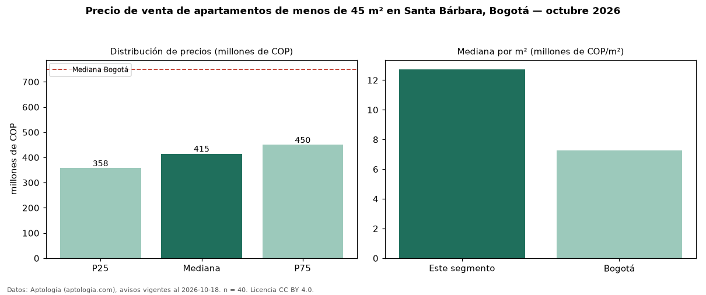

Precio de venta de apartamentos de menos de 45 m² en Santa Bárbara, Bogotá — octubre 2026
COP 415 millones es el precio mediano de apartamentos de menos de 45 m² en venta en Santa Bárbara (localidad de Usaquén), Bogotá (n = 40 avisos). Eso es 58 % menos que la mediana de todos los apartamentos en venta de Santa Bárbara (COP 982 millones, n = 1.128); este segmento reúne el 4 % de esos avisos. Por metro cuadrado, la mediana es COP 12,74 millones/m² (n = 38), 78 % por encima del conjunto de referencia (COP 7,14 millones/m²). El área mediana anunciada es 32 m². El segmento con más oferta es el de 1 habitación (40 avisos, mediana COP 415 millones). La administración mediana declarada es COP 343.000 al mes (n = 27). El estrato más frecuente es 6 (62 % de los avisos con estrato). La mediana de todos los apartamentos en venta de Bogotá es COP 750 millones (−45 % de diferencia). Datos: Aptología (aptologia.com), CC BY 4.0 — https://www.aptologia.com/venta/bogota/santa-barbara. Archivos: PDF, CSV con las cifras y gráfica PNG.

| Avisos únicos | 40 |
|---|---|
| Percentil 25 | COP 357.500.000 |
| Mediana | COP 415.000.000 |
| Percentil 75 | COP 450.000.000 |
| Mediana por m² | COP 12.735.552 |
Fuente: avisos vigentes de portales inmobiliarios recopilados por Aptología, deduplicados (mínimo 30 avisos únicos por celda). Precios pedidos, no cerrados. Fecha: 2026-10-18.